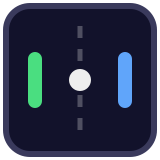

De klassieker, opnieuw uitgevonden · 1 tot 8 spelers
De klassieker, opnieuw uitgevonden · 1 tot 8 spelers
Merkbelofte: De klassieker, opnieuw uitgevonden — voor 1 tot 8 spelers. PONG is retro in uitstraling en modern in gebruik: donker speelveld, neonaccenten, één scherm, geen installatie.
assets/logo.svgassets/logo-licht.svg
assets/logo-icon.svgHet icoon toont het speelveld: groene peddel (links), blauwe peddel (rechts), witte bal en gestippelde middenlijn in een afgerond indigo vlak. In het woordmerk is de N altijd Neon Groen.
| Speler | Kleur | Hex | Speler | Kleur | Hex |
|---|---|---|---|---|---|
| P1 | Neon Groen | #4ADE80 | P5 | Oranje | #FB923C |
| P2 | Turkoois | #2DD4BF | P6 | Roze | #F472B6 |
| P3 | Arcade Blauw | #60A5FA | P7 | Geel | #FACC15 |
| P4 | Paars | #A78BFA | P8 | Rood | #F87171 |
Uitgeschakelde spelers zijn altijd grijs (#3A3A3A). Kleur is nooit de enige informatie: elke speler heeft ook een nummer (P1–P8) en een positielabel.
| Element | Lettertype | Stijl |
|---|---|---|
| Koppen en logo | 'Segoe UI', Arial, sans-serif | Vet (700), hoofdletters, hoofdtitel met letterspatiëring 0,35 em |
| Lopende tekst | 'Segoe UI', Arial, sans-serif | Normaal (400) |
| Scores en cijfers | Zelfde lettertype | Tabulaire cijfers (tabular-nums), vet |
| Toetsen | Systeemfont, <kbd>-stijl | Achtergrond #2A2A48, rand #4A4A70, hoeken 4 px |
Er worden geen externe webfonts geladen: alles werkt offline en zonder installatie.
#1E1E32, rand Rand Indigo, tekst Sterrenwit. Actieve modusknop: volledig Neon Groen met Nachtblauw tekst.--nachtblauw, --speelveld, --rand, --groen, --blauw, --tekst, --gedimd) in CSS én in de canvas-tekening, het logo staat in de header van het spel en als favicon, en deze PDF is in dezelfde stijl gezet.index.html in een moderne browser (Chrome, Edge, Firefox, Safari). Dubbelklikken volstaat; geen internet of installatie nodig.1 speler: jij (links, groen) tegen de computer (rechts, blauw). Moeilijkheidsgraad naar keuze:
| Niveau | Wat je merkt |
|---|---|
| Makkelijk | Trage computer, ruim tijd om te reageren |
| Normaal | Eerlijke tegenstander voor beginners |
| Moeilijk | Snelle reacties, kleine foutmarge |
| Onmogelijk | Vrijwel perfecte computer — voor wie een uitdaging zoekt |
2 spelers: samen op één scherm; links W/S, rechts de pijltjestoetsen. De computer doet niet mee.
8 spelers — Battle Royale: acht peddels, twee per zijde (ook boven en onder). Iedereen verdedigt zijn eigen helft:
| Toets / actie | Functie |
|---|---|
| Spatie | Starten / pauzeren / verder spelen |
| P | Pauzeren / verder spelen |
| Muis bewegen | Linker peddel (klassiek) of P1 (Battle Royale) |
| Aanraken en slepen | Zelfde als muis (tablet/telefoon) |
| Speler | Positie | Kleur | Toetsen |
|---|---|---|---|
| P1 | Links-boven | Groen | W / S (ook muis) |
| P2 | Links-onder | Turkoois | Q / A |
| P3 | Rechts-boven | Blauw | I / K |
| P4 | Rechts-onder | Paars | O / L |
| P5 | Boven-links | Oranje | 1 / 2 |
| P6 | Boven-rechts | Roze | 9 / 0 |
| P7 | Onder-links | Geel | Z / X |
| P8 | Onder-rechts | Rood | N / M |
| Element | Functie |
|---|---|
| Modusknoppen | Wisselen tussen 1 speler, 2 spelers en 8 spelers; de stand wordt gereset |
| Moeilijkheidsgraad | Alleen zichtbaar in modus 1 speler |
| Start / Pauze | Start of pauzeert (zelfde als Spatie) |
| Reset | Score/levens en bal terug naar het begin |
| Geluid (vinkje) | Pieptonen bij botsingen en punten aan/uit |
| Spelers-chips (8 spelers) | Klik: wisselt die plek tussen mens en computer |
| Probleem | Oplossing |
|---|---|
| Spel reageert niet op toetsen | Klik één keer in het spelvenster (focus) en druk op Spatie. |
| Geen geluid | Zet het vinkje Geluid aan. Browsers spelen pas geluid na een eerste klik/toets: start met de knop Speel. |
| Bal even onzichtbaar na een punt | Dat klopt: tijdens de serveerpauze knippert de bal in het midden. |
| Letters werken "verkeerd" | Zie de AZERTY-opmerking bij de besturing: fysieke QWERTY-posities. |
| Te groot / te klein beeld | Het veld schaalt mee met je venster; zoom met Ctrl++ / -. |
| Opnieuw beginnen | Klik op Reset of wissel van modus. |
huisstijl.md (huisstijl), handleiding.md (handleiding), docs/huisstijl-en-handleiding.html (deze printversie), Pong-Huisstijl-en-Handleiding.pdf.